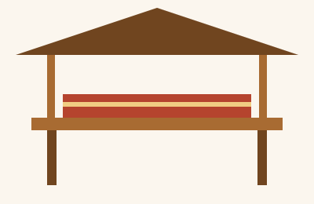
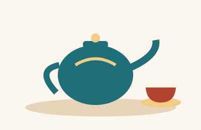

Palov
Guruch, sabzi va boshqa masalliqlardan tayyorlanadigan milliy taom.
45 000 so'm
SC
Samimiy muhit, mazali taomlar
Milliy taomlar va choy ustida yoqimli suhbat uchun.
Sahovat choyxonasi — milliy taomlar va choy madaniyatini tanishtirish uchun yaratilgan o'quv loyihasi namunasi.
Bu yerda do'stlar va oila a'zolari bilan uchrashib, samimiy suhbat qurish g'oyasi aks etadi.
Menyu va narxlar namunaviy — buyurtmadan oldin haqiqiy narxlarni aniqlashtiring.
“Dasturxon atrofida samimiyat va hurmat qadrlanadi.”
Quyidagi taomlar choyxona menyusi uchun namunaviy ro'yxatdir. Narxlar haqiqiy savdo taklifi hisoblanmaydi.
Guruch, sabzi va boshqa masalliqlardan tayyorlanadigan milliy taom.
45 000 so'm
Sixda pishiriladigan taom.
18 000 so'm
Xamir va qiymali masalliqli taom.
30 000 so'm
Issiq ichimlik. Soat 14:00 gacha chegirma bor.
8 000 so'm
Pomidor va piyozdan tayyorlanadigan salat.
14 000 so'm
Taom tarkibi va allergenlar haqida buyurtma berishdan oldin xodimdan so'rang.


Stol band qilish uchun aloqa sahifasidagi formani to'ldiring.